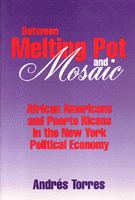

<body bgcolor="#FFFFFF" text="#000000" link="#0000FF" vlink="#CC0000" alink="#CC0000"><center><hr width="350" size="1" align="center" noshade>A political-economic reassessment of New York's African American and Puerto Rican communities<hr width="350" size="1" align="center" noshade><p><a href="https://cdcshoppingcart.uchicago.edu/Cart/ChicagoBook.aspx?ISBN=9781566392792&&PRESS=temple" target="_top">Buy this book!</a> | <a href="https://cdcshoppingcart.uchicago.edu/Cart/Cart.aspx?PRESS=temple" target="_top">View Cart</a> | <a href="https://cdcshoppingcart.uchicago.edu/Cart/Cart.aspx?PRESS=temple" target="_top">Check Out</a></p><p></p></center><!--none//--><h1>Between Melting Pot and Mosaic</h1>
<H2>African American and Puerto Ricans in the New York Political Economy</H2>
<h3>Andrés Torres</h3>
<P>cloth 1-56639-279-9 $75.50, Feb 95, <FONT COLOR=#990033>Out of Stock Unavailable</FONT>
<br>paper 1-56639-280-2 $31.95, Feb 95, <FONT COLOR=#990033>Out of Stock Unavailable</FONT>
<BR> 264 pp
6x9
10&nbsp;tables
</P><BLOCKQUOTE><I>"Torres' book is an important and unique contribution to the study of race relations in the United States. There is relatively little written on the subject and this stands out as a breakthrough work. His comparative analysis of two similarly situated non-white groups&#151African Americans and Puerto Ricans&#151is innovative and his synthesis of political and economic approaches is imaginative and quite fruitful."</I>
<br>&#151<b>Angelo Falcon</b>, President and Founder, Institute for Puerto Rican Policy, New York<I></I></BLOCKQUOTE>
<p>Probing the nature and causes of continuing poverty and inequality among New York City's two largest minorities&#151African Americans and Puerto Ricans&#151Andrés Torres explores their struggles for economic and political survival through phases of exclusion, insurgency, and backlash. From post-World War II New York through the global New York of the 1990s, Torres analyzes the groups' respective evolutions within U.S. history; their incorporation into the nation's and the city's economies; and their strategies for political action, socioeconomic mobility, and community infrastructure. His innovative examination illuminates the deeper sources for inequality in all urban cities in the United States.
<BR>&nbsp;<h2>Excerpt</h2><P>Excerpt available at <a href="http://www.temple.edu/tempress">www.temple.edu/tempress</a></p>
<BR>&nbsp;<h2>Reviews</h2>
<p><I>"By challenging the conventional neglect of the role of African Americans and Puerto Ricans in the New York labor market, Torres sheds new light on the complex and sometimes troubled relationship between two native minority groups."</I>
<br>&#151<b>David Bensman</b>, Department of Labor Relations, Rutgers University
<BR>&nbsp;<h2>Contents</h2><P>
<p>List of Tables
<br>Acknowledgments
<br>Introduction
<br>1. Class, Race, and the Reproduction of Inequality
<br>2. The Regional and Urban Context: 1945-1990
<br>3. African Americans and Puerto Ricans in New York
<br>4. Patterns of Labor Market Mobility and Wages
<br>5. Native Minorities, Immigrant Minorities
<br>6. Politics and Culture in the New New York: An Expanding Foundation
<br>7. Policy Wars 2000
<br>Conclusion
<br>Appendixes
<br>Notes
<br>Bibliography
<br>Index
</P><BR>&nbsp;<H2>About the Author(s)</H2>
<P><b>Andrés Torres</b> is Associate Professor and Director of the Center for Labor Research at the University of Massachusetts, Boston.</P>
<BR><H2>Subject Categories</H2>
<p><A HREF="/tempress/political.html" TARGET="_top">Political Science and Public Policy</a>
<BR><A HREF="/tempress/race.html" TARGET="_top">Race and Ethnicity</a>
<BR><A HREF="/tempress/labor.html" TARGET="_top">Labor Studies and Work</a>
</p>
<p align="center"><a href="https://cdcshoppingcart.uchicago.edu/Cart/ChicagoBook.aspx?ISBN=9781566392792&&PRESS=temple" target="_top">Buy this book!</a> | <a href="https://cdcshoppingcart.uchicago.edu/Cart/Cart.aspx?PRESS=temple" target="_top">View Cart</a> | <a href="https://cdcshoppingcart.uchicago.edu/Cart/Cart.aspx?PRESS=temple" target="_top">Check Out</a></p><p><font face="Arial" size="1"><a href="copyright.html" onMouseOver="window.status='Web Copyright Policy';return true;" onMouseOut="window.status=''" title="Web Copyright Policy">&copy;</a> 2015 <a href="http://www.temple.edu" target="new" onMouseOver="window.status='Link to Temple University home page';return true;" onMouseOut="window.status=''" title="Link to Temple University home page">Temple University</a>. All Rights Reserved. http://www.temple.edu/tempress/titles/1124_reg.html</font></p>